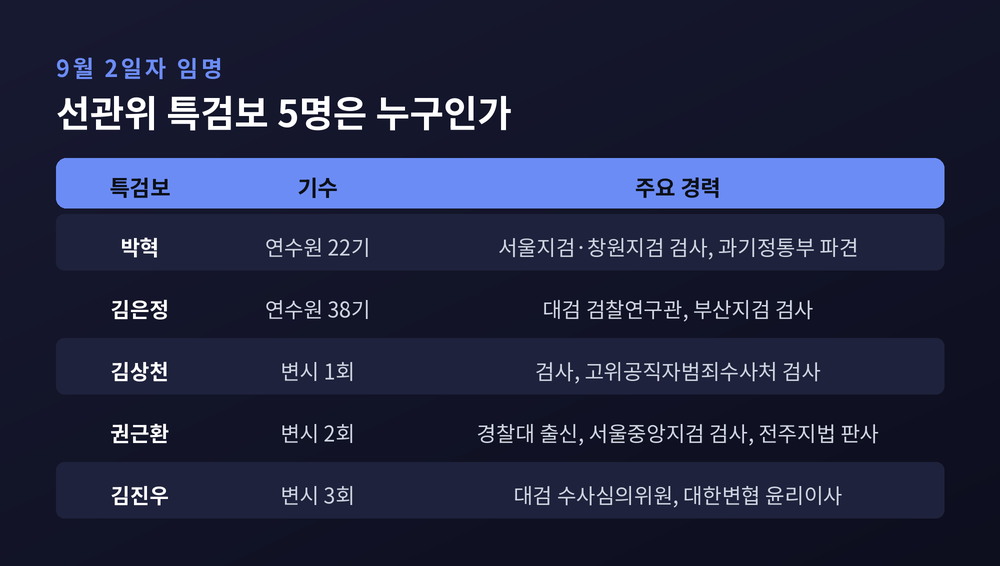
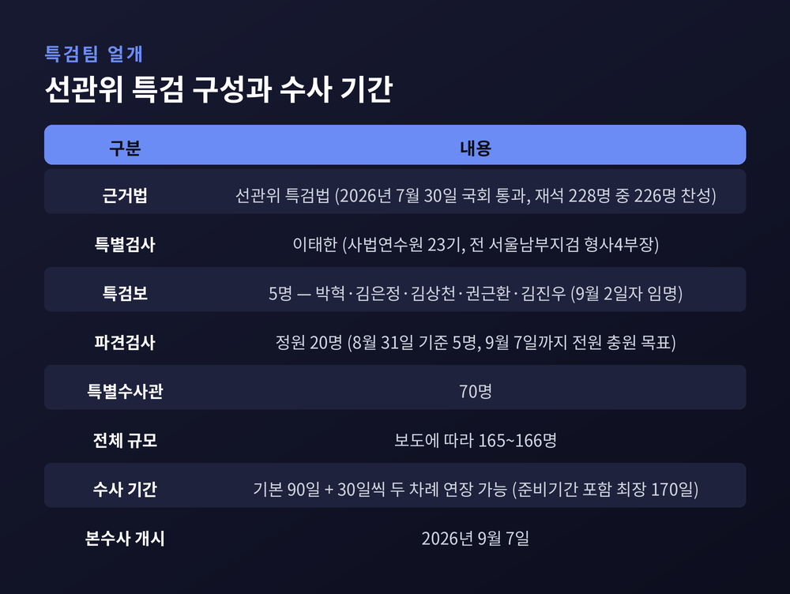
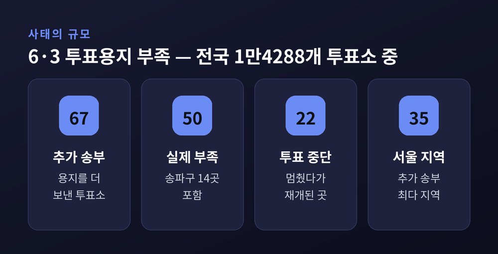
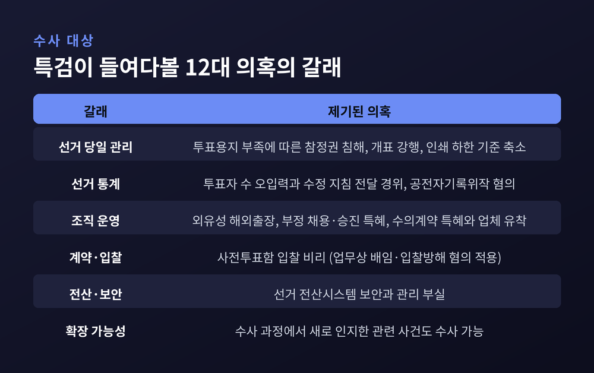
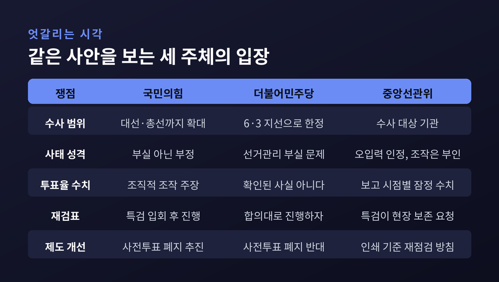

이번 글에서는 9월 7일 본수사에 들어가는 선관위 특검을 정리해 보겠습니다. 9월 2일자로 특검보 5명이 임명되면서 수사팀의 얼개가 드러났습니다. 확인된 사실과 아직 의혹 단계인 주장을 구분해 살펴보겠습니다.
세 줄 요약
이태한 선거관리위원회 특별검사팀은 9월 1일 언론 공지를 통해 특검보 인선이 마무리됐다고 밝혔습니다. 이재명 대통령이 9월 2일자로 특별검사보 5명을 임명했다는 내용입니다.
임명된 다섯 명은 박혁, 김은정, 김상천, 권근환, 김진우 변호사입니다. 앞서 특검팀은 8월 28일 후보자 10명을 추린 뒤 이 가운데 5명을 임명해 달라고 요청한 바 있습니다.
경력은 고르게 흩어져 있습니다. 박혁 특검보는 서울지검과 창원지검 검사를 지냈고 과학기술정보통신부 파견 근무 경험이 있습니다. 김은정 특검보는 대검찰청 검찰연구관과 부산지검 검사를 거쳤습니다. 김상천 특검보는 검사와 고위공직자범죄수사처 검사를 지냈습니다. 권근환 특검보는 경찰대를 나와 서울지방경찰청 경감, 서울중앙지검 검사, 전주지법 판사를 두루 경험했습니다. 김진우 특검보는 대검 검찰수사심의위원회 위원과 대한변호사협회 윤리이사를 지냈습니다.
특검팀은 이들의 전문성과 경력에 맞춰 담당 수사 분야를 나누고 조직 구성을 마무리할 계획이라고 밝혔습니다.

수사 인력도 같은 속도로 채워지고 있습니다.
이태한 특검은 8월 21일 대검찰청을 찾아 검사 20명의 파견을 요청했습니다. 8월 31일 기준으로 파견검사는 5명입니다. 부장검사 1명, 부부장검사 1명, 평검사 3명으로 구성돼 있습니다. 특검팀은 준비기간이 끝나는 9월 7일까지 정원 20명을 전원 채우겠다고 밝혔습니다.
준비 작업도 병행됐습니다. 특검팀은 지난 6월 출범한 검·경 합동수사본부로부터 수사기록 일체를 넘겨받아 파견검사들과 함께 검토에 들어갔습니다. 특검팀은 "기록 검토가 끝나는 대로 수사 계획을 세워, 특검 업무 개시와 동시에 본격적인 수사에 들어갈 방침"이라고 설명했습니다.
특검법상 특검팀은 특별검사 1명, 특검보 5명, 파견검사 20명, 특별수사관 70명 등을 두게 됩니다. 전체 규모는 보도에 따라 165명 또는 166명으로 조금씩 다르게 표기되고 있습니다. 활동 기간은 준비기간 20일을 포함해 최장 170일입니다. 기본 수사기간은 90일이고, 필요할 경우 30일씩 두 차례 연장할 수 있습니다.

특검의 뿌리는 석 달 전으로 거슬러 올라갑니다.
6월 3일 제9회 전국동시지방선거 본투표 당일, 일부 투표소에서 투표용지가 떨어졌습니다. 중앙선관위가 6월 5일 브리핑에서 밝힌 수치는 이렇습니다. 전국 1만4288개 투표소 가운데 투표용지를 추가로 보낸 곳이 67곳, 실제로 부족했던 곳이 50곳이었습니다. 투표가 잠시 멈췄다가 재개된 투표소는 22곳이었습니다.
지역별로는 서울이 35곳으로 가장 많았고 부산과 경남이 각각 8곳, 대구 7곳, 인천 6곳, 울산 3곳이었습니다. 기초자치단체 중에서는 서울 송파구가 15개 투표소로 가장 많았습니다.
선관위는 투표용지를 선거인 수보다 적게 인쇄한 배경을 설명했습니다. 사전투표율이 계속 오르면서 선거일 투표소용 용지가 과다하게 남는 경향이 있었다는 것입니다. 그래서 대통령선거와 국회의원선거는 선거인 수의 60%, 지방선거는 50%를 하한으로 산정할 수 있도록 지침을 고쳤다고 밝혔습니다. 선관위는 이 기준이 '50% 고정'이 아니라 '50% 하한'이라고 덧붙였습니다.
문제는 그다음이었습니다. 송파구 전체 물량으로는 부족하지 않았지만, 146개 투표소별 선거일 투표자 수 편차를 읽지 못했다는 것이 선관위의 설명입니다. 현장 대응도 늦었습니다. 송파구위원회가 서울시위원회에 문의한 시각은 오전 11시 40분경, 무번호 투표용지 불출이 시작된 시각은 오후 2시경이었습니다.
선관위는 "배분과 이송이 미흡했다"고 인정했습니다. 노태악 당시 중앙선관위원장은 "참정권이라는 국민의 소중한 권리를 침해하는 있어서는 안 될 일이 발생했다"며 사퇴 의사를 밝혔고, 허철훈 사무총장도 사의를 표명했습니다. 이후 외부 인사로 꾸려진 선관위 진상규명위원회는 '선거관리 총체적 부실'로 판단하고 노 전 위원장 등에 대한 수사 의뢰를 권고했습니다.

선관위 특검법은 여야 합의로 만들어졌습니다. 7월 30일 국회 본회의에서 재석 228명 중 226명 찬성으로 통과했습니다. 반대표는 개혁신당 이준석·이주영 의원 2명이었습니다.
특검법이 정한 수사 대상은 12가지입니다. 크게 세 갈래로 묶어볼 수 있습니다.
첫째는 선거 당일 관리입니다. 투표용지 부족으로 참정권 행사가 침해됐다는 의혹, 부실 관리 문제가 제기된 뒤에도 개표 중단이나 보전 조치 없이 개표를 강행했다는 의혹, 공식 의결 절차를 거치지 않고 본투표용지 인쇄 물량의 하한 기준을 축소했다는 의혹입니다.
둘째는 선거 통계입니다. 합동수사본부는 중앙선관위가 선거 당일 '투표자 수에 오류가 발생해도 기존 수치를 수정하지 않고 이후 보고 과정에서 가감하라'는 취지의 지침을 일선에 전달한 정황을 확보했다고 알려졌습니다. 합수본은 중앙선관위와 경기도선관위 관계자 등을 공전자기록위작과 공무집행방해 혐의로 입건했습니다. 특검은 이 지침이 만들어지고 전달된 경위, 그리고 수뇌부의 관여 여부를 살펴볼 것으로 보입니다.
셋째는 조직 운영입니다. 노태악 전 위원장 등의 외유성 해외출장 의혹, 부정 채용·승진 특혜 의혹, 수의계약 특혜와 업체 유착 의혹, 사전투표함 입찰 비리 의혹 등이 여기에 들어갑니다. 합수본은 8월 14일 중앙·서울·경기 선관위와 입찰 참여 업체를 압수수색하고, 이른바 '들러리 업체'를 동원해 특정 업체가 사업을 따내도록 한 것으로 의심해 업무상 배임과 입찰방해 혐의를 적용했습니다.
다만 이 항목들은 모두 수사 중이거나 입건 단계의 의혹입니다. 아직 법원의 판단을 받은 사안은 없습니다. 무죄추정의 원칙은 이 사건에도 그대로 적용됩니다.

여야가 특검법에는 합의했지만, 수사 범위에서는 정면으로 갈라섰습니다.
국민의힘은 범위를 넓게 봅니다. 장동혁 대표는 특검법 통과 직후 "지선과 총선, 대선 등 어떤 것이든 공소시효만 남아 있다면 모든 수사가 가능하다"며 "수사 과정에서 인지한 사건도 수사 대상에 포함했기 때문에 거의 제한이 없다"고 주장했습니다. 주진우 의원은 8월 3일 기자회견에서 2024년 총선의 이른바 '쌍둥이 투표구' 사례를 제시하며 투표자 수가 인위적으로 입력됐다고 주장했고, 2025년 대선에서도 투표구 109곳에서 조작이 있었다는 의혹을 제기했습니다. 김은혜 의원은 중앙선관위가 지역 선관위에 '투표자 수를 여러 투표소에 분산 입력하라'고 안내했다는 자료를 공개했습니다.
더불어민주당은 범위를 좁게 봅니다. 특검 수사 대상은 6·3 지방선거로 한정된다는 입장입니다. 민주당은 국민의힘이 잠실 올림픽공원 투표지 재검표 일정을 미루면서 국정조사를 정략적으로 활용하고 있다고 비판해 왔습니다.
중앙선관위는 절충적인 입장을 냈습니다. 국정조사 청문회에서 투표율 오입력 사실을 인정하고 사과했습니다. 다만 "오입력은 의도된 조작이 아니고 득표율에도 영향을 미치지 않는 만큼 부정선거라는 주장에는 동의할 수 없다"고 선을 그었습니다. 시간대별 투표자 수는 입력과 집계, 보고 시점에 따라 오차가 생길 수밖에 없는 잠정 수치라는 설명입니다.
여기서 분명히 해둘 것이 있습니다. 총선과 대선에서 조직적인 조작이 있었다는 주장은 현재까지 수사나 재판으로 확인된 사실이 아니라 정치권이 제기한 의혹입니다. 동시에, 선관위가 투표율 입력 과정에서 무결성 관리에 허점을 보였다는 비판 역시 선관위 스스로 일부 인정한 대목입니다. 두 가지는 서로 다른 층위의 이야기입니다.

국회 국정조사특별위원회는 결국 매듭을 짓지 못했습니다.
특위는 활동 기간을 8월 30일까지 30일 연장했습니다. 목적은 송파구 올림픽공원 개표소에 보관된 투표지 약 247만 장을 재검표하기 위한 준비였습니다. 여야는 8월 18일 재검표를 잠정 합의하기도 했습니다.
그러나 합의는 이행되지 않았습니다. 민주당은 예정대로 진행하자고 했고, 국민의힘은 증거 오염 가능성을 막기 위해 특검이 입회해야 한다고 맞섰습니다. 일정은 확정되지 못했고 재검표는 무산됐습니다. 결과보고서 채택도 불투명해졌습니다.
그래서 국정조사가 풀지 못한 의혹이 그대로 특검으로 넘어왔습니다. 특검팀이 중앙선관위에 올림픽공원 개표소를 현재 상태로 보존해 달라는 공문을 보낸 것도 같은 맥락입니다.
이 사건이 무거운 이유는 대상이 헌법기관이기 때문입니다.
선관위는 헌법이 독립성을 보장한 기관입니다. 그런 기관이 특검 수사를 받는 상황은 흔치 않습니다. 한쪽에서는 "독립성이 곧 면책은 아니며, 참정권 침해라는 결과에 책임을 물어야 한다"고 말합니다. 다른 쪽에서는 "선거관리 기구가 정치적 수사의 무대가 되면 중립성 자체가 흔들린다"고 우려합니다. 두 걱정 모두 근거가 없지 않습니다.
이태한 특검은 임명 직후 이 지점을 의식한 발언을 내놨습니다. 그는 "여당이나 야당, 선관위 어느 쪽에도 정치적으로 유리하거나 불리한 결론을 미리 정해놓고 수사하지 않겠다"며 "오직 법과 원칙, 객관적인 증거와 사실에 따라 수사하겠다"고 밝혔습니다. 특검의 역할은 의혹의 확대가 아니라 해소라는 말도 덧붙였습니다.
앞으로의 변수는 두 갈래입니다.
하나는 수사 자체입니다. 합수본이 실무진 조사와 압수수색으로 뼈대를 세워둔 만큼, 특검 단계에서는 노태악 전 위원장을 비롯한 선관위 수뇌부에 대한 직접 조사가 이뤄질 가능성이 거론됩니다. 다만 소환 여부와 시기는 아직 확정된 바 없습니다.
다른 하나는 입법입니다. 국민의힘은 9월 3일 정책 의원총회에서 사전투표 폐지, 본투표 이틀 실시, 투표용지 100% 인쇄, 득표율 격차 0.5%포인트 이내 선거구 자동 재검표 등을 담은 개혁안을 논의했습니다. 중앙선관위 사무총장·사무차장 폐지와 감사위원회 설치 같은 조직 개편안도 포함됐습니다. 아직 발의·추진 단계이고 여당은 사전투표 폐지에 부정적입니다. 특검 수사 결과가 이 논의의 무게추를 어느 쪽으로 옮길지가 관전 지점입니다.
정리하면 이렇습니다.
9월 7일부터 시작되는 것은 결론이 아니라 검증입니다. 확인된 것은 투표용지가 실제로 부족했고 22곳에서 투표가 멈췄다는 사실, 그리고 선관위가 관리 부실을 인정했다는 사실입니다. 나머지는 아직 의혹이고 주장입니다.
"의혹의 확대가 아니라 해소" — 특검이 스스로 내건 기준입니다.
수사가 끝난 뒤 이 문장이 지켜졌는지 되묻게 될 것입니다. 그때 어느 정파도 아닌 유권자가 답을 얻게 된다면, 170일은 결코 길지 않은 시간일 것입니다.